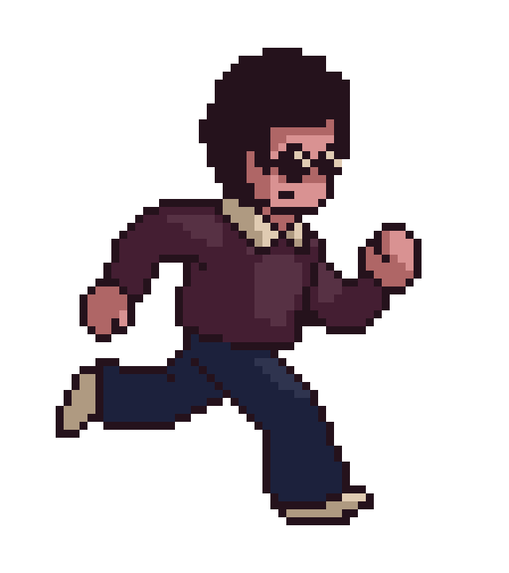

Project Context
The project involves creating a mobile augmented reality (AR) game. To accomplish this, we used Unity3D and the ARFoundation plugin.
Our Game
We chose to create a game where players take care of a pet creature that looks like a slime called Slimy. Slimy's world is generated to match the player's surroundings. It consists of a surface with Slimy at the center, its house, and a forest area.
To take care of Slimy, players need to maintain its satisfaction level. Several actions are available:
-
Give Slimy food by clicking on the generated terrain.
-
Clean Slimy by tapping on it.
-
Ask Slimy to move to a designated location.
-
Do nothing and let Slimy recover its energy.
Project Creation Date
This project was completed during the fourth year at Gaming Campus, specializing in computer science with a focus on video games.
Team
The team consists of 2 developers in their fourth year at Gaming Campus.
Links to the Code and Game Build
Click here to access the GitHub repository
Click here to download the game
